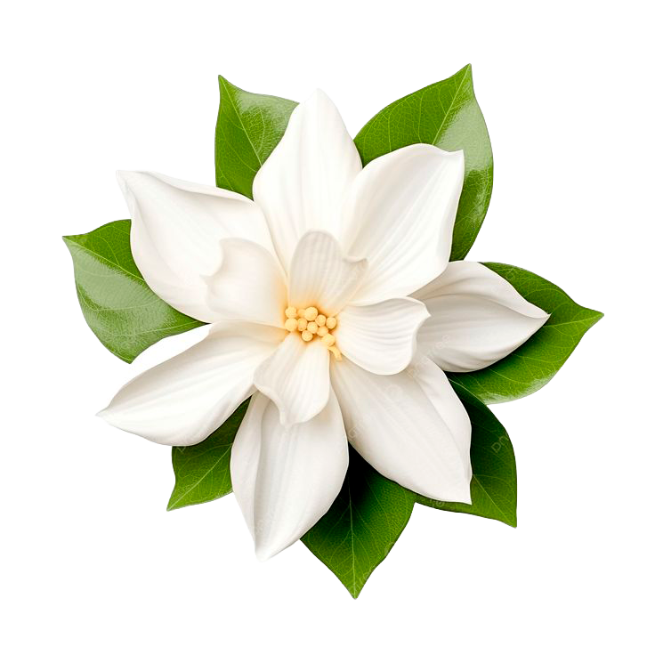
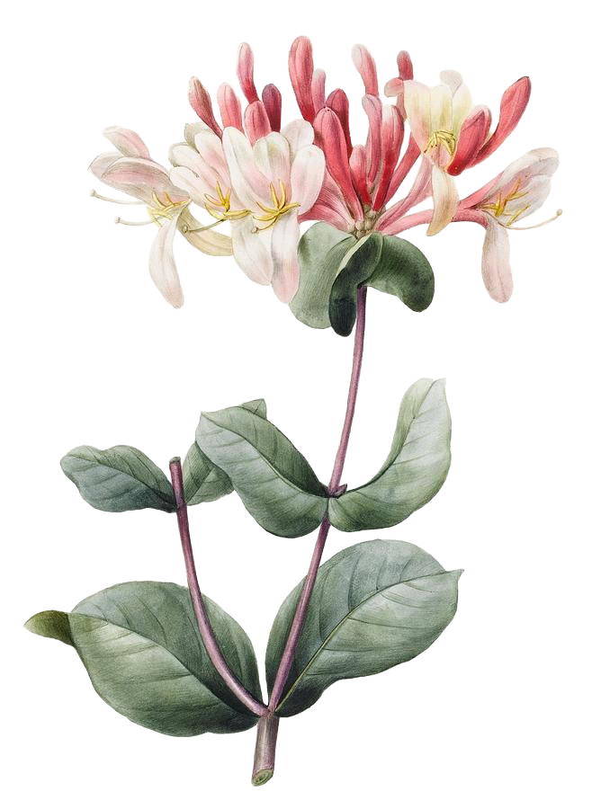
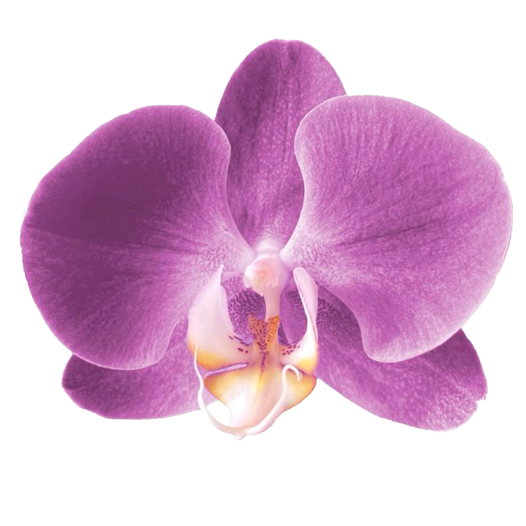
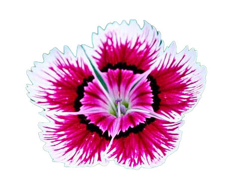

Para Evellyn.
Foi um prazer enorme te conhecer. Realmente não esperava por nada disso, mas acabei sendo arrebatado por seu charme e jeitinho de ser. Espero do fundo do meu coração que possamos nos conhecer cada vez mais. Abaixo, segue o nome e significado das flores deste pequeno gesto. Elas foram especificamente escolhidas como uma forma de declarar como você mexe comigo.
Flores e seus significados

Botão-de-ouro
Você tem um charme radiante.

Jasmim
Amabilidade; Alegria.

Madressilva
Devoção; Afeto.

Orquídea
Elegância; Beleza.

Amor-perfeito
Você está nos meus pensamentos.

Cravina
Galanteio.
Com muito carinho,
Joaquim!
Joaquim!